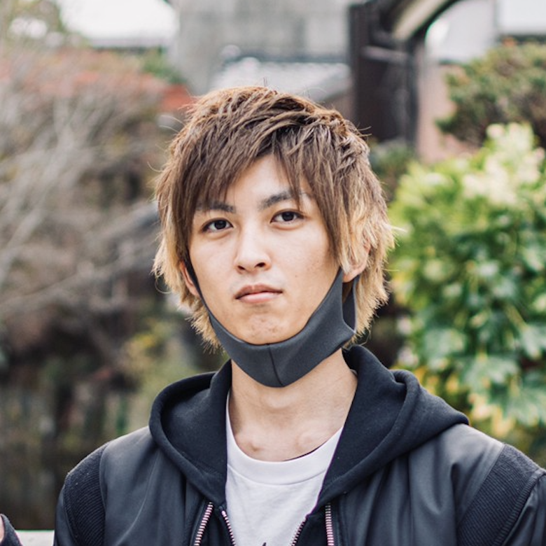

<!DOCTYPE html>
<html>
<head>
<meta charset="UTF-8">
<title>Hiroki Adachi</title>
<link rel="stylesheet" type="text/css" href="./css/style.css">
</head>
<body>

<div id="site-box">
  <div id="header">
    <div id="header-left">
      <ul style="list-style:none">
        <li style="display:inline-block"><a class="cp_link" href="./index_ja.html">Home</a></li>
        <li style="display:inline-block">&nbsp;&nbsp;</li>
        <li style="display:inline"><a class="cp_link" href="./Publications.html">Publication</a></li>
        <li style="display:inline-block">&nbsp;&nbsp;</li>
        <li style="display:inline"><a class="cp_link" href="./SlideShare.html">SlideShare</a></li>
      </ul>
    </div>
    <div id="header-right">
      <ul style="list-style:none">
        <li style="display:inline-block"><a class="cp_link" href="./index_ja.html">Ja</a></li>
        <li style="display:inline-block">&nbsp;&nbsp;</li>
        <li style="display:inline"><a class="cp_link" href="./index.html">En</a></li>
      </ul>
    </div>
  </div>

<div id="left-box">
  <center>
      <a href="./index.html">
        
      </a>
    <h2>足立 浩規</h2>
    <h5>中部大学 ロボット理工学専攻</h5>
    
      <p>ha618[at]mprg.cs.chubu.ac.jp</p>
    <a target="_blank" href="http://mprg.jp/"></a>
    <a target="_blank" href="https://github.com/hirokiadachi"></a>
    <a target="_blank" href="https://www.slideshare.net/ha618"></a>
    <a target="_blank" href="https://twitter.com/hiroki_a618"></a>
  </center>
</div>

<!--------- about me --------------->
<div id="right-box">
  <h1>About me</h1>
  中部大学 工学研究科 ロボット理工学専攻 博士後期課程2年 (D2) 藤吉・山下研究室 (MPRG: Machine Perception and Robotics Group)に所属しています．
  画像生成モデル (GANやVAE)や敵対学習，視覚的説明などの研究に興味があります．
  現在は，主に敵対学習の研究をしています．
</div>

<!--------- Education --------------->
<div id="right-box">
  <h1>Education</h1>
  <p>- 2014/4 ~ 2018/3 中部大学　ロボット理工学科</p>
  <p>- 2018/4 ~ 2020/3 中部大学　ロボット理工学専攻　修士課程</p>
  <p>- 2020/4 ~ 中部大学　ロボット理工学専攻　博士後期課程</p>
</div>

<!--------- Award --------------->
<div id="right-box">
  <h1>Awards</h1>
  <h3>2020</h3>
  <p>- 日本学生支援機構 第一種奨学金 特に優れた業績よる返還免除 (一部)</p>
  <p>- MIRU 2020 学生奨励賞 (学生奨励賞)
</div>
</div>
</body>
</html>
